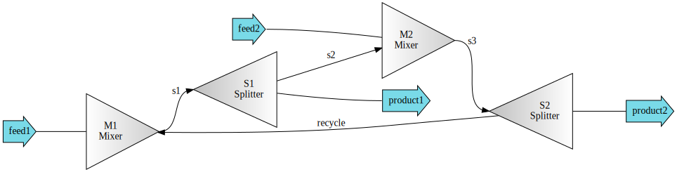

Using -pipe- notation¶
Connecting unit operations can be simplified through -pipe- notation. As an example, here we create a process with multiple units and connect them as a demonstration.
With -pipe- notation you can get stream outputs and set stream inputs in the following format:
In [1]:
# U1-n -> U1.outs[n]
# U1-[0, 1] -> U1.outs[0, 1]
# s1-U1 -> U1.ins[:] = s1
# s1-n-U1 -> U1.ins[n] = s1
# [s1, s2]-U1 -> U1.ins[:] = [s1, s2]
# U1-n1-n2-U2 -> U2.ins[n2] = U1.outs[n1]
As an example, create 2 feeds, 2 Mixers and 2 Splitters:
In [2]:
from biosteam import Mixer, Splitter, Stream
# Set feed stream and units
feed1 = Stream('feed1')
M1 = Mixer('M1', outs='s1')
S1 = Splitter('S1', outs=('s2', 'product1'))
feed2 = Stream('feed2')
M2 = Mixer('M2', outs=('s3'))
S2 = Splitter('S2', outs=('recycle', 'product2'))
Now connect streams linearly along the units, and create a loop between S2 and M1:
In [3]:
# In -pipe- notation:
(feed1, S2-0)-M1-S1
(feed2, S1-0)-M2-S2
# Without -pipe- notation:
# M1.ins[:] = (feed1, S2.outs[0])
# S1.ins[:] = M1.outs
# M2.ins[:] = (feed2, S1.outs[0])
# S2.ins[:] = M2.outs
Out[3]:
<Splitter: S2>
Create a system to help view the connections:
In [4]:
from biosteam import System
system = System('system', network=(M1, S1, M2, S2))
system.diagram
